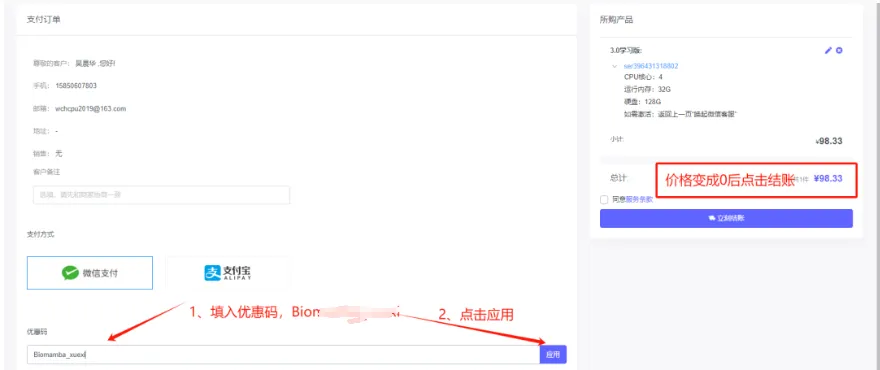
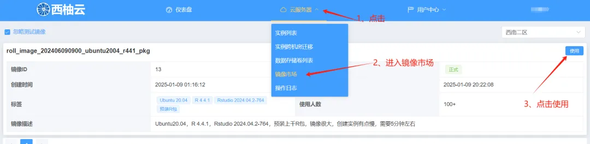
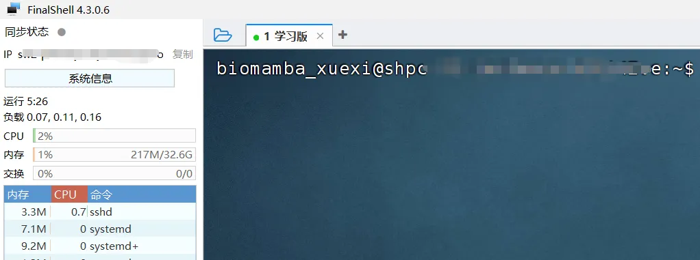

每月上架50个名额|免费使用两周的学习版服务器
原文：https://mp.weixin.qq.com/s?__biz=MzAwMzIzOTk5OQ==&mid=2247528216&idx=2&sn=b7be762860b48931492dad9f4a27017c&chksm=9b3c1648ac4b9f5eeafec9c6344bb32dabcf337033d1df4137ffefc5d90c475679c0b3bcc2f3#rd 合集：服务器

之前给大家用来练手的学习版由于机房升级一直没有上架，现在是时候回归啦。给大家上架了一批免费的 、32GB 、4线程 的服务器(使用时长两周)，配合我们的十小时学会Linux，应该足够你完成Linux的学习啦。
大家可以根据视频来申请体验权限：
第一步 ，复制网址(https://biomamba.xiyoucloud.net/)至浏览器，注册账号实名认证。第二步 ，点击进入生信服务器列表，选择3.0学习版的"点击购买"，加入购物车：
 第三步 ，输入并应用优惠码(联系文末领取)，查看价格是否变成0元
第三步 ，输入并应用优惠码(联系文末领取)，查看价格是否变成0元

第四步 ，联系文末微信，发送账号/用户ID，我们为您激活服务器 第五步 ，进入控制台创建实例选择西南二区

创建服务器实例，设置账户和密码，获取IP和端口

设置好之后就可以用ssh正常远程连接啦：

Rstudio-server也是可以正常使用的，大家可以愉快的学习R语言和单细胞：

如何联系我们

 留一个领取资料、免费两周学习版上服务器的微信号 ，方便各位随时交流（别问在么，添加时直接说来意）。同时我们也构建了交流群矩阵，欢迎大家入群讨论。
留一个领取资料、免费两周学习版上服务器的微信号 ，方便各位随时交流（别问在么，添加时直接说来意）。同时我们也构建了交流群矩阵，欢迎大家入群讨论。
大家可以阅读完这几篇之后添加给生信入门初学者的小贴士 如何搜索公众号过往发布内容
已有生信基地联系方式的同学无需重复添加

 您点的每个赞和在看，我都认真当成了喜欢
您点的每个赞和在看，我都认真当成了喜欢